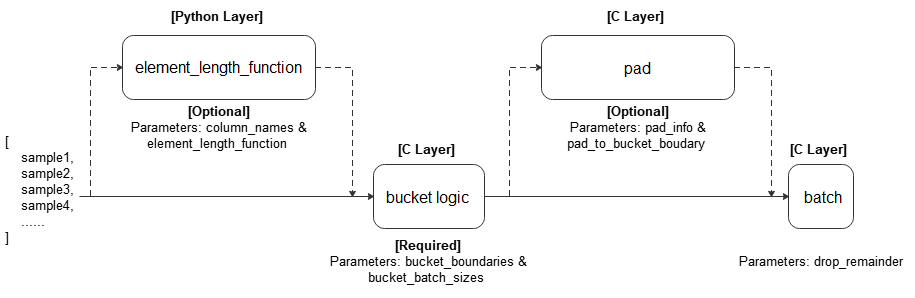

mindspore.dataset.SVHNDataset
- class mindspore.dataset.SVHNDataset(dataset_dir, usage=None, num_samples=None, num_parallel_workers=1, shuffle=None, sampler=None, num_shards=None, shard_id=None)[源代码]
A source dataset that reads and parses SVHN dataset.
The generated dataset has two columns:
[image, label]. The tensor of columnimageis of the uint8 type. The tensor of columnlabelis of a scalar of uint32 type.- Parameters
dataset_dir (str) – Path to the root directory that contains the dataset.
usage (str, optional) – Specify the ‘train’, ‘test’, ‘extra’ or ‘all’ parts of dataset (default=None, will read all samples).
num_samples (int, optional) – The number of samples to be included in the dataset (default=None, all images).
num_parallel_workers (int, optional) – Number of subprocesses used to fetch the dataset in parallel (default=1).
shuffle (bool, optional) – Whether or not to perform shuffle on the dataset. Random accessible input is required. (default=None, expected order behavior shown in the table).
sampler (Sampler, optional) – Object used to choose samples from the dataset. Random accessible input is required (default=None, expected order behavior shown in the table).
num_shards (int, optional) – Number of shards that the dataset will be divided into (default=None). Random accessible input is required. When this argument is specified, ‘num_samples’ reflects the max sample number of per shard.
shard_id (int, optional) – The shard ID within num_shards (default=None). This argument must be specified only when num_shards is also specified. Random accessible input is required.
- Raises
RuntimeError – If dataset_dir is not valid or does not exist or does not contain data files.
ValueError – If num_parallel_workers exceeds the max thread numbers.
RuntimeError – If sampler and shuffle are specified at the same time.
RuntimeError – If sampler and num_shards/shard_id are specified at the same time.
RuntimeError – If num_shards is specified but shard_id is None.
RuntimeError – If shard_id is specified but num_shards is None.
ValueError – If usage is invalid.
ValueError – If shard_id is invalid (< 0 or >= num_shards).
Note
This dataset can take in a sampler. ‘sampler’ and ‘shuffle’ are mutually exclusive. The table below shows what input arguments are allowed and their expected behavior.
Expected Order Behavior of Using ‘sampler’ and ‘shuffle’ Parameter ‘sampler’
Parameter ‘shuffle’
Expected Order Behavior
None
None
random order
None
True
random order
None
False
sequential order
Sampler object
None
order defined by sampler
Sampler object
True
not allowed
Sampler object
False
not allowed
Examples
>>> svhn_dataset_dir = "/path/to/svhn_dataset_directory" >>> dataset = ds.SVHNDataset(dataset_dir=svhn_dataset_dir, usage="train")
About SVHN dataset:
SVHN dataset consists of 10 digit classes. SVHN is obtained from house numbers in Google Street View images. 73257 digits for training, 26032 digits for testing, and 531131 additional extra training data.
Here is the original SVHN dataset structure. You can unzip the dataset files into this directory structure and read by MindSpore’s API.
. └── svhn_dataset_dir ├── train_32x32.mat ├── test_32x32.mat └── extra_32x32.matCitation:
@article{ title={Reading Digits in Natural Images with Unsupervised Feature Learning}, author={Yuval Netzer, Tao Wang, Adam Coates, Alessandro Bissacco, Bo Wu, Andrew Y. Ng}, conference={NIPS Workshop on Deep Learning and Unsupervised Feature Learning 2011.}, year={2011}, publisher={NIPS} url={http://ufldl.stanford.edu/housenumbers} }
- add_sampler(new_sampler)
Add a child sampler for the current dataset.
- Parameters
new_sampler (Sampler) – The child sampler to be added.
Examples
>>> new_sampler = ds.DistributedSampler(10, 2) >>> dataset.add_sampler(new_sampler) # dataset is an instance of Dataset
- apply(apply_func)
Apply a function in this dataset.
- Parameters
apply_func (function) – A function that must take one Dataset as an argument and return a preprocessed Dataset.
- Returns
Dataset, dataset applied by the function.
Examples
>>> # dataset is an instance object of Dataset >>> >>> # Declare an apply_func function which returns a Dataset object >>> def apply_func(data): ... data = data.batch(2) ... return data >>> >>> # Use apply to call apply_func >>> dataset = dataset.apply(apply_func)
- batch(batch_size, drop_remainder=False, num_parallel_workers=None, per_batch_map=None, input_columns=None, output_columns=None, column_order=None, pad_info=None, python_multiprocessing=False, max_rowsize=16)
Combine batch_size number of consecutive rows into batches.
For any column, all the elements within that column must have the same shape. If a per_batch_map callable is provided, it will be applied to the batches of tensors.
Note
The order of using repeat and batch reflects the number of batches and per_batch_map. It is recommended that the repeat operation applied after the batch operation finished.
- Parameters
batch_size (Union[int, Callable]) – The number of rows each batch is created with. An int or callable object which takes exactly 1 parameter, BatchInfo.
drop_remainder (bool, optional) – Determines whether or not to drop the last block whose data row number is less than batch size (default=False). If True, and if there are less than batch_size rows available to make the last batch, then those rows will be dropped and not propagated to the child node.
num_parallel_workers (int, optional) – Number of workers(threads) to process the dataset in parallel (default=None).
per_batch_map (Callable[[List[numpy.ndarray], ..., List[numpy.ndarray], BatchInfo], (List[numpy.ndarray], ..., List[numpy.ndarray])], optional) – Per batch map callable (default=None). A callable which takes (List[numpy.ndarray], …, List[numpy.ndarray], BatchInfo) as input parameters. Each list[numpy.ndarray] represents a batch of numpy.ndarray on a given column. The number of lists should match with the number of entries in input_columns. The last parameter of the callable should always be a BatchInfo object. Per_batch_map should return (list[numpy.ndarray], list[numpy.ndarray], …). The length of each list in output should be the same as the input. output_columns is required if the number of output lists is different from input.
input_columns (Union[str, list[str]], optional) – List of names of the input columns. The size of the list should match with signature of per_batch_map callable (default=None).
output_columns (Union[str, list[str]], optional) – List of names assigned to the columns outputted by the last operation. This parameter is mandatory if len(input_columns) != len(output_columns). The size of this list must match the number of output columns of the last operation. (default=None, output columns will have the same name as the input columns, i.e., the columns will be replaced).
column_order (Union[str, list[str]], optional) – Specifies the list of all the columns you need in the whole dataset (default=None). The parameter is required when len(input_column) != len(output_column). Caution: the list here is not just the columns specified in parameter input_columns and output_columns.
pad_info (dict, optional) – Whether to perform padding on selected columns. pad_info={“col1”:([224,224],0)} would pad column with name “col1” to a tensor of size [224,224] and fill the missing with 0 (default=None).
python_multiprocessing (bool, optional) – Parallelize Python function per_batch_map with multi-processing. This option could be beneficial if the function is computational heavy (default=False).
max_rowsize (int, optional) – Maximum size of row in MB that is used for shared memory allocation to copy data between processes. This is only used if python_multiprocessing is set to True (default=16).
- Returns
BatchDataset, dataset batched.
Examples
>>> # 1) Create a dataset where every 100 rows are combined into a batch >>> # and drops the last incomplete batch if there is one. >>> dataset = dataset.batch(100, True) >>> >>> # 2）resize image according to its batch number, if it's 5-th batch, resize to (5^2, 5^2) = (25, 25) >>> def np_resize(col, BatchInfo): ... output = col.copy() ... s = (BatchInfo.get_batch_num() + 1) ** 2 ... index = 0 ... for c in col: ... img = Image.fromarray(c.astype('uint8')).convert('RGB') ... img = img.resize((s, s)) ... output[index] = np.array(img) ... index += 1 ... return (output,) >>> dataset = dataset.batch(batch_size=8, input_columns=["image"], per_batch_map=np_resize) >>> >>> # 3）Create a dataset where its batch size is dynamic >>> # Define a callable batch size function and let batch size increase 1 each time. >>> def add_one(BatchInfo): ... return BatchInfo.get_batch_num() + 1 >>> dataset = dataset.batch(batch_size=add_one, drop_remainder=True) >>> >>> # 4）Create a dataset with batch, then specify the column order. >>> # Assume that the original coulmn order is ["image", "label"] and change to ["label", "image"]. >>> dataset = dataset.batch(32, column_order=["label", "image"])
- bucket_batch_by_length(column_names, bucket_boundaries, bucket_batch_sizes, element_length_function=None, pad_info=None, pad_to_bucket_boundary=False, drop_remainder=False)
Bucket elements according to their lengths. Each bucket will be padded and batched when they are full.
A length function is called on each row in the dataset. The row is then bucketed based on its length and bucket boundaries. When a bucket reaches its corresponding size specified in bucket_batch_sizes, the entire bucket will be padded according to pad_info, and then form a batch.
Refer to the following figure for the execution process:
- Parameters
column_names (list[str]) – Columns passed to element_length_function.
bucket_boundaries (list[int]) – A list consisting of the upper boundaries of the buckets. Must be strictly increasing. If there are n boundaries, n+1 buckets are created: One bucket for [0, bucket_boundaries[0]), one bucket for [bucket_boundaries[i], bucket_boundaries[i+1]) for each 0<i<n-1, and the last bucket for [bucket_boundaries[n-1], inf).
bucket_batch_sizes (list[int]) – A list consisting of the batch sizes for each bucket. Must contain len(bucket_boundaries)+1 elements.
element_length_function (Callable, optional) – A function that takes in M arguments where M = len(column_names) and returns an integer. If no value provided, parameter M the len(column_names) must be 1, and the size of the first dimension of that column will be taken as the length (default=None).
pad_info (dict, optional) – The information about how to batch each column. The key corresponds to the column name, and the value must be a tuple of 2 elements. The first element corresponds to the shape to pad to, and the second element corresponds to the value to pad with. If a column is not specified, then that column will be padded to the longest in the current batch, and 0 will be used as the padding value. Any None dimensions will be padded to the longest in the current batch, unless if pad_to_bucket_boundary is True. If no padding is wanted, set pad_info to None (default=None).
pad_to_bucket_boundary (bool, optional) – If True, will pad each None dimension in pad_info to the bucket_boundary minus 1. If there are any elements that fall into the last bucket, an error will occur (default=False).
drop_remainder (bool, optional) – If True, will drop the last batch for each bucket if it is not a full batch (default=False).
- Returns
Dataset, dataset bucketed and batched by length.
Examples
>>> # Create a dataset where certain counts rows are combined into a batch >>> # and drops the last incomplete batch if there is one. >>> import numpy as np >>> def generate_2_columns(n): ... for i in range(n): ... yield (np.array([i]), np.array([j for j in range(i + 1)])) >>> >>> column_names = ["col1", "col2"] >>> dataset = ds.GeneratorDataset(generate_2_columns(8), column_names) >>> bucket_boundaries = [5, 10] >>> bucket_batch_sizes = [2, 1, 1] >>> element_length_function = (lambda col1, col2: max(len(col1), len(col2))) >>> # Will pad col2 to shape [bucket_boundaries[i]] where i is the >>> # index of the bucket that is currently being batched. >>> pad_info = {"col2": ([None], -1)} >>> pad_to_bucket_boundary = True >>> dataset = dataset.bucket_batch_by_length(column_names, bucket_boundaries, ... bucket_batch_sizes, ... element_length_function, pad_info, ... pad_to_bucket_boundary)
- build_sentencepiece_vocab(columns, vocab_size, character_coverage, model_type, params)
Function to create a SentencePieceVocab from source dataset. Desired source dataset is a text type dataset.
- Parameters
vocab_size (int) – Vocabulary size.
character_coverage (float) – Percentage of characters covered by the model, must be between 0.98 and 1.0 Good defaults are: 0.9995 for languages with rich character sets like Japanese or Chinese character sets, and 1.0 for other languages with small character sets like English or Latin.
model_type (SentencePieceModel) – Model type. Choose from unigram (default), bpe, char, or word. The input sentence must be pretokenized when using word type.
params (dict) – Any extra optional parameters of sentencepiece library according to your raw data
- Returns
SentencePieceVocab, vocab built from the dataset.
Examples
>>> from mindspore.dataset.text import SentencePieceModel >>> >>> # You can construct any text dataset as source, take TextFileDataset as example. >>> dataset = ds.TextFileDataset("/path/to/sentence/piece/vocab/file", shuffle=False) >>> dataset = dataset.build_sentencepiece_vocab(["text"], 5000, 0.9995, SentencePieceModel.UNIGRAM, {})
- build_vocab(columns, freq_range, top_k, special_tokens, special_first)
Function to create a Vocab from source dataset. Desired source dataset is a text type dataset.
Build a vocab from a dataset. This would collect all the unique words in a dataset and return a vocab which contains top_k most frequent words (if top_k is specified).
- Parameters
columns (Union[str, list[str]]) – Column names to get words from.
freq_range (tuple[int]) – A tuple of integers (min_frequency, max_frequency). Words within the frequency range will be stored. Naturally 0 <= min_frequency <= max_frequency <= total_words. min_frequency/max_frequency can be set to default, which corresponds to 0/total_words separately.
top_k (int) – Number of words to be built into vocab. top_k most frequent words are taken. The top_k is taken after freq_range. If not enough top_k, all words will be taken
special_tokens (list[str]) – A list of strings, each one is a special token.
special_first (bool) – Whether special_tokens will be prepended/appended to vocab, If special_tokens is specified and special_first is set to default, special_tokens will be prepended.
- Returns
Vocab, vocab built from the dataset.
Examples
>>> import numpy as np >>> >>> def gen_corpus(): ... # key: word, value: number of occurrences, reason for using letters is so their order is apparent ... corpus = {"Z": 4, "Y": 4, "X": 4, "W": 3, "U": 3, "V": 2, "T": 1} ... for k, v in corpus.items(): ... yield (np.array([k] * v, dtype='S'),) >>> column_names = ["column1"] >>> dataset = ds.GeneratorDataset(gen_corpus, column_names) >>> dataset = dataset.build_vocab(columns=["column1"], ... freq_range=(1, 10), top_k=5, ... special_tokens=["<pad>", "<unk>"], ... special_first=True)
- close_pool()
Close multiprocessing pool in dataset. If you are familiar with multiprocessing library, you can regard this as a destructor for a processingPool object.
Note
This interface will be deleted or invisible in the future. Please don’t use it. When you find that there are residual processes that do not exit correctly, you can use kill -9 PROCESS_ID to end it, or through www.gitee.com/mindspore/mindspore send us an issue.
- concat(datasets)
Concatenate the dataset objects in the input list. Performing “+” operation on dataset objects can achieve the same effect.
Note
The column name, and rank and type of the column data must be the same in the input datasets.
- Parameters
datasets (Union[list, Dataset]) – A list of datasets or a single class Dataset to be concatenated together with this dataset.
- Returns
Dataset, dataset concatenated.
Examples
>>> # Create a dataset by concatenating dataset_1 and dataset_2 with "+" operator >>> dataset = dataset_1 + dataset_2 >>> # Create a dataset by concatenating dataset_1 and dataset_2 with concat operation >>> dataset = dataset_1.concat(dataset_2)
- create_dict_iterator(num_epochs=- 1, output_numpy=False)
Create an iterator over the dataset. The data retrieved will be a dictionary datatype.
- Parameters
- Returns
Iterator, dictionary iterator over the dataset.
Examples
>>> # dataset is an instance object of Dataset >>> iterator = dataset.create_dict_iterator() >>> for item in iterator: ... # item is a dict ... print(type(item)) ... break <class 'dict'>
- create_tuple_iterator(columns=None, num_epochs=- 1, output_numpy=False, do_copy=True)
Create an iterator over the dataset. The datatype retrieved back will be a list of numpy.ndarray.
To specify which columns to list and the order needed, use columns_list. If columns_list is not provided, the order of the columns will remain unchanged.
- Parameters
columns (list[str], optional) – List of columns to be used to specify the order of columns (default=None, means all columns).
num_epochs (int, optional) – Maximum number of epochs that iterator can be iterated. (default=-1, iterator can be iterated infinite number of epochs)
output_numpy (bool, optional) – Whether or not to output NumPy datatype. If output_numpy=False, iterator will output MSTensor (default=False).
do_copy (bool, optional) – when output data type is mindspore.Tensor, use this param to select the conversion method, only take False for better performance (default=True).
- Returns
Iterator, tuple iterator over the dataset.
Examples
>>> # dataset is an instance object of Dataset >>> iterator = dataset.create_tuple_iterator() >>> for item in iterator: ... # item is a list ... print(type(item)) ... break <class 'list'>
- device_que(send_epoch_end=True, create_data_info_queue=False)
Return a transferred Dataset that transfers data through a device.
- Parameters
Note
If device is Ascend, features of data will be transferred one by one. The limitation of data transmission per time is 256M.
- Returns
Dataset, dataset for transferring.
- dynamic_min_max_shapes()
Get minimum and maximum data length of dynamic source data, for dynamic graph compilation.
- Returns
lists, min_shapes, max_shapes of source data.
Examples
>>> import numpy as np >>> >>> def generator1(): ... for i in range(1, 100): ... yield np.ones((16, i, 83)), np.array(i) >>> >>> dataset = ds.GeneratorDataset(generator1, ["data1", "data2"]) >>> dataset.set_dynamic_columns(columns={"data1": [16, None, 83], "data2": []}) >>> min_shapes, max_shapes = dataset.dynamic_min_max_shapes()
- filter(predicate, input_columns=None, num_parallel_workers=None)
Filter dataset by prediction.
- Parameters
predicate (callable) – Python callable which returns a boolean value. If False then filter the element.
input_columns (Union[str, list[str]], optional) – List of names of the input columns. If not provided or provided with None, the predicate will be applied on all columns in the dataset (default=None).
num_parallel_workers (int, optional) – Number of workers to process the dataset in parallel (default=None).
- Returns
Dataset, dataset filtered.
Examples
>>> # generator data(0 ~ 63) >>> # filter the data that greater than or equal to 11 >>> dataset = dataset.filter(predicate=lambda data: data < 11, input_columns = ["data"])
- flat_map(func)
Map func to each row in dataset and flatten the result.
- Parameters
func (function) – A function that must take one numpy.ndarray as an argument and return a Dataset.
- Returns
Dataset, dataset applied by the function.
Examples
>>> # 1) flat_map on one column dataset >>> dataset = ds.NumpySlicesDataset([[0, 1], [2, 3]], shuffle=False) >>> >>> def repeat(array): ... # create a NumpySlicesDataset with the array ... data = ds.NumpySlicesDataset(array, shuffle=False) ... # repeat the dataset twice ... data = data.repeat(2) ... return data >>> >>> dataset = dataset.flat_map(repeat) >>> # [0, 1, 0, 1, 2, 3, 2, 3] >>> >>> # 2) flat_map on multi column dataset >>> dataset = ds.NumpySlicesDataset(([[0, 1], [2, 3]], [[0, -1], [-2, -3]]), shuffle=False) >>> >>> def plus_and_minus(col1, col2): ... # apply different methods on columns ... data = ds.NumpySlicesDataset((col1 + 1, col2 - 1), shuffle=False) ... return data >>> >>> dataset = dataset.flat_map(plus_and_minus) >>> # ([1, 2, 3, 4], [-1, -2, -3, -4])
- get_batch_size()
Return the size of batch.
- Returns
int, the number of data in a batch.
Examples
>>> # dataset is an instance object of Dataset >>> batch_size = dataset.get_batch_size()
- get_class_indexing()
Return the class index.
- Returns
dict, a str-to-int mapping from label name to index. dict, a str-to-list<int> mapping from label name to index for Coco ONLY. The second number in the list is used to indicate the super category.
Examples
>>> # dataset is an instance object of Dataset >>> class_indexing = dataset.get_class_indexing()
- get_col_names()
Return the names of the columns in dataset.
- Returns
list, list of column names in the dataset.
Examples
>>> # dataset is an instance object of Dataset >>> col_names = dataset.get_col_names()
- get_dataset_size()
Return the number of batches in an epoch.
- Returns
int, number of batches.
Examples
>>> # dataset is an instance object of Dataset >>> dataset_size = dataset.get_dataset_size()
- get_repeat_count()
Get the replication times in RepeatDataset (default is 1).
- Returns
int, the count of repeat.
Examples
>>> # dataset is an instance object of Dataset >>> repeat_count = dataset.get_repeat_count()
- property input_indexs
Get the column index, which represents the corresponding relationship between the data column order and the network when using the sink mode.
- Returns
int, tuple of the input index information.
Examples
>>> # dataset is an instance object of Dataset >>> # set input_indexs >>> dataset.input_indexs = 10 >>> print(dataset.input_indexs) 10
- map(operations, input_columns=None, output_columns=None, column_order=None, num_parallel_workers=None, python_multiprocessing=False, cache=None, callbacks=None, max_rowsize=16, offload=None)
Apply each operation in operations to this dataset.
Each operation will be passed one or more columns from the dataset as input, and one or more columns will be outputted. The first operation will be passed the columns specified in input_columns as input. If there is more than one operator in operations, the outputted columns of the previous operation are used as the input columns for the next operation.
The columns outputted by the very last operation will be assigned names specified by output_columns, and if not specified, the column name of output column is same as that of input_columns.
- Parameters
operations (Union[list[TensorOperation], list[functions]]) – List of operations to be applied on the dataset. Operations are applied in the order they appear in this list.
input_columns (Union[str, list[str]], optional) – List of the names of the columns that will be passed to the first operation as input. The size of this list must match the number of input columns expected by the first operator. (default=None, the first operation will be passed however many columns that are required, starting from the first column).
output_columns (Union[str, list[str]], optional) – List of names assigned to the columns outputted by the last operation. This parameter is mandatory if len(input_columns) != len(output_columns). The size of this list must match the number of output columns of the last operation. (default=None, output columns will have the same name as the input columns, i.e., the columns will be replaced).
column_order (Union[str, list[str]], optional) – Specifies the list of all the columns you need in the whole dataset (default=None). The parameter is required when len(input_column) != len(output_column). Caution: the list here is not just the columns specified in parameter input_columns and output_columns.
num_parallel_workers (int, optional) – Number of threads used to process the dataset in parallel (default=None, the value from the configuration will be used).
python_multiprocessing (bool, optional) – Parallelize Python operations with multiple worker processes. This option could be beneficial if the Python operation is computational heavy (default=False).
cache (DatasetCache, optional) – Use tensor caching service to speed up dataset processing. (default=None, which means no cache is used).
callbacks (DSCallback, list[DSCallback], optional) – List of Dataset callbacks to be called (Default=None).
max_rowsize (int, optional) – Maximum size of row in MB that is used for shared memory allocation to copy data between processes. This is only used if python_multiprocessing is set to True (Default=16).
offload (bool, optional) – Flag to indicate whether offload is used (Default=None).
Note
Input operations accepts TensorOperations defined in mindspore.dataset part, plus user-defined Python functions (PyFuncs).
Do not add network computing operators from mindspore.nn and mindspore.ops or others into this operations.
- Returns
Dataset, dataset after mapping operation.
Examples
>>> # dataset is an instance of Dataset which has 2 columns, "image" and "label". >>> >>> # Define two operations, where each operation accepts 1 input column and outputs 1 column. >>> decode_op = c_vision.Decode(rgb=True) >>> random_jitter_op = c_vision.RandomColorAdjust(brightness=(0.8, 0.8), contrast=(1, 1), ... saturation=(1, 1), hue=(0, 0)) >>> >>> # 1) Simple map example. >>> >>> # Apply decode_op on column "image". This column will be replaced by the outputted >>> # column of decode_op. Since column_order is not provided, both columns "image" >>> # and "label" will be propagated to the child node in their original order. >>> dataset = dataset.map(operations=[decode_op], input_columns=["image"]) >>> >>> # Decode and rename column "image" to "decoded_image". >>> dataset = dataset.map(operations=[decode_op], input_columns=["image"], output_columns=["decoded_image"]) >>> >>> # Specify the order of the output columns. >>> dataset = dataset.map(operations=[decode_op], input_columns=["image"], ... output_columns=None, column_order=["label", "image"]) >>> >>> # Rename column "image" to "decoded_image" and also specify the order of the output columns. >>> dataset = dataset.map(operations=[decode_op], input_columns=["image"], ... output_columns=["decoded_image"], column_order=["label", "decoded_image"]) >>> >>> # Rename column "image" to "decoded_image" and keep only this column. >>> dataset = dataset.map(operations=[decode_op], input_columns=["image"], ... output_columns=["decoded_image"], column_order=["decoded_image"]) >>> >>> # A simple example for mapping pyfunc. Renaming columns and specifying column order >>> # work in the same way as the previous examples. >>> dataset = ds.NumpySlicesDataset(data=[[0, 1, 2]], column_names=["data"]) >>> dataset = dataset.map(operations=[(lambda x: x + 1)], input_columns=["data"]) >>> >>> # 2) Map example with more than one operation. >>> >>> # Create a dataset where the images are decoded, then randomly color jittered. >>> # decode_op takes column "image" as input and outputs one column. The column >>> # outputted by decode_op is passed as input to random_jitter_op. >>> # random_jitter_op will output one column. Column "image" will be replaced by >>> # the column outputted by random_jitter_op (the very last operation). All other >>> # columns are unchanged. Since column_order is not specified, the order of the >>> # columns will remain the same. >>> dataset = dataset.map(operations=[decode_op, random_jitter_op], input_columns=["image"]) >>> >>> # Rename the column outputted by random_jitter_op to "image_mapped". >>> # Specifying column order works in the same way as examples in 1). >>> dataset = dataset.map(operations=[decode_op, random_jitter_op], input_columns=["image"], ... output_columns=["image_mapped"]) >>> >>> # Map with multiple operations using pyfunc. Renaming columns and specifying column order >>> # work in the same way as examples in 1). >>> dataset = ds.NumpySlicesDataset(data=[[0, 1, 2]], column_names=["data"]) >>> dataset = dataset.map(operations=[(lambda x: x * x), (lambda x: x - 1)], input_columns=["data"], ... output_columns=["data_mapped"]) >>> >>> # 3) Example where number of input columns is not equal to number of output columns. >>> >>> # operations[0] is a lambda that takes 2 columns as input and outputs 3 columns. >>> # operations[1] is a lambda that takes 3 columns as input and outputs 1 column. >>> # operations[2] is a lambda that takes 1 column as input and outputs 4 columns. >>> # >>> # Note: The number of output columns of operation[i] must equal the number of >>> # input columns of operation[i+1]. Otherwise, this map call will also result >>> # in an error. >>> operations = [(lambda x, y: (x, x + y, x + y + 1)), ... (lambda x, y, z: x * y * z), ... (lambda x: (x % 2, x % 3, x % 5, x % 7))] >>> >>> # Note: Since the number of input columns is not the same as the number of >>> # output columns, the output_columns and column_order parameters must be >>> # specified. Otherwise, this map call will also result in an error. >>> >>> dataset = ds.NumpySlicesDataset(data=([[0, 1, 2]], [[3, 4, 5]]), column_names=["x", "y"]) >>> >>> # Propagate all columns to the child node in this order: >>> dataset = dataset.map(operations, input_columns=["x", "y"], ... output_columns=["mod2", "mod3", "mod5", "mod7"], ... column_order=["mod2", "mod3", "mod5", "mod7"]) >>> >>> # Propagate some columns to the child node in this order: >>> dataset = dataset.map(operations, input_columns=["x", "y"], ... output_columns=["mod2", "mod3", "mod5", "mod7"], ... column_order=["mod7", "mod3", "col2"])
- num_classes()
Get the number of classes in a dataset.
- Returns
int, number of classes.
Examples
>>> # dataset is an instance object of Dataset >>> num_classes = dataset.num_classes()
- output_shapes(estimate=False)
Get the shapes of output data.
- Parameters
estimate (bool) – If estimate is False, will return the shapes of first data row. Otherwise, will iterate the whole dataset and return the estimated shapes of data row, where dynamic shape is marked as None (used in dynamic data shapes scenario). Default: False.
- Returns
list, list of shapes of each column.
Examples
>>> import numpy as np >>> >>> def generator1(): ... for i in range(1, 100): ... yield np.ones((16, i, 83)), np.array(i) >>> >>> dataset = ds.GeneratorDataset(generator1, ["data1", "data2"]) >>> output_shapes = dataset.output_shapes()
- output_types()
Get the types of output data.
- Returns
list, list of data types.
Examples
>>> # dataset is an instance object of Dataset >>> output_types = dataset.output_types()
- project(columns)
The specified columns will be selected from the dataset and passed into the pipeline with the order specified. The other columns are discarded.
- Parameters
columns (Union[str, list[str]]) – List of names of the columns to project.
- Returns
Dataset, dataset projected.
Examples
>>> # dataset is an instance object of Dataset >>> columns_to_project = ["column3", "column1", "column2"] >>> >>> # Create a dataset that consists of column3, column1, column2 >>> # in that order, regardless of the original order of columns. >>> dataset = dataset.project(columns=columns_to_project)
- rename(input_columns, output_columns)
Rename the columns in input datasets.
- Parameters
- Returns
Dataset, dataset renamed.
Examples
>>> # dataset is an instance object of Dataset >>> input_columns = ["input_col1", "input_col2", "input_col3"] >>> output_columns = ["output_col1", "output_col2", "output_col3"] >>> >>> # Create a dataset where input_col1 is renamed to output_col1, and >>> # input_col2 is renamed to output_col2, and input_col3 is renamed >>> # to output_col3. >>> dataset = dataset.rename(input_columns=input_columns, output_columns=output_columns)
- repeat(count=None)
Repeat this dataset count times. Repeat infinitely if the count is None or -1.
Note
The order of using repeat and batch reflects the number of batches. It is recommended that the repeat operation is used after the batch operation.
- Parameters
count (int) – Number of times the dataset is going to be repeated (default=None).
- Returns
Dataset, dataset repeated.
Examples
>>> # dataset is an instance object of Dataset >>> >>> # Create a dataset where the dataset is repeated for 50 epochs >>> dataset = dataset.repeat(50) >>> >>> # Create a dataset where each epoch is shuffled individually >>> dataset = dataset.shuffle(10) >>> dataset = dataset.repeat(50) >>> >>> # Create a dataset where the dataset is first repeated for >>> # 50 epochs before shuffling. The shuffle operator will treat >>> # the entire 50 epochs as one big dataset. >>> dataset = dataset.repeat(50) >>> dataset = dataset.shuffle(10)
- reset()
Reset the dataset for next epoch.
- save(file_name, num_files=1, file_type='mindrecord')
Save the dynamic data processed by the dataset pipeline in common dataset format. Supported dataset formats: mindrecord only. And you can use MindDataset API to read the saved file(s).
Implicit type casting exists when saving data as mindrecord. The transform table shows how to do type casting.
Implicit Type Casting when Saving as mindrecord Type in dataset
Type in mindrecord
Details
bool
None
Not supported
int8
int32
uint8
bytes(1D uint8)
Drop dimension
int16
int32
uint16
int32
int32
int32
uint32
int64
int64
int64
uint64
None
Not supported
float16
float32
float32
float32
float64
float64
string
string
Multi-dimensional string not supported
Note
To save the samples in order, set dataset’s shuffle to False and num_files to 1.
Before calling the function, do not use batch operator, repeat operator or data augmentation operators with random attribute in map operator.
When array dimension is variable, one-dimensional arrays or multi-dimensional arrays with variable dimension 0 are supported.
Mindrecord does not support uint64, multi-dimensional uint8(drop dimension) nor multi-dimensional string.
- set_dynamic_columns(columns=None)
Set dynamic shape information of source data, it should be set after the pipeline is defined.
- Parameters
columns (dict) – A dict contains shape information of each column in dataset. The value of shape[i] is
Noneindicates that the data length of shape[i] is dynamic.
Examples
>>> import numpy as np >>> >>> def generator1(): ... for i in range(1, 100): ... yield np.ones((16, i, 83)), np.array(i) >>> >>> dataset = ds.GeneratorDataset(generator1, ["data1", "data2"]) >>> dataset.set_dynamic_columns(columns={"data1": [16, None, 83], "data2": []})
- shuffle(buffer_size)
Randomly shuffles the rows of this dataset using the following policy:
Make a shuffle buffer that contains the first buffer_size rows.
Randomly select an element from the shuffle buffer to be the next row propagated to the child node.
Get the next row (if any) from the parent node and put it in the shuffle buffer.
Repeat steps 2 and 3 until there are no more rows left in the shuffle buffer.
A random seed can be provided to be used on the first epoch via dataset.config.set_seed. In every subsequent epoch, the seed is changed to a new one, randomly generated value.
- Parameters
buffer_size (int) – The size of the buffer (must be larger than 1) for shuffling. Setting buffer_size equal to the number of rows in the entire dataset will result in a global shuffle.
- Returns
Dataset, dataset shuffled.
- Raises
RuntimeError – If exist sync operators before shuffle.
Examples
>>> # dataset is an instance object of Dataset >>> # Optionally set the seed for the first epoch >>> ds.config.set_seed(58) >>> # Create a shuffled dataset using a shuffle buffer of size 4 >>> dataset = dataset.shuffle(4)
- skip(count)
Skip the first N elements of this dataset.
- Parameters
count (int) – Number of elements in the dataset to be skipped.
- Returns
Dataset, dataset that containing rows like origin rows subtract skipped rows.
Examples
>>> # dataset is an instance object of Dataset >>> # Create a dataset which skips first 3 elements from data >>> dataset = dataset.skip(3)
- split(sizes, randomize=True)
Split the dataset into smaller, non-overlapping datasets.
- Parameters
sizes (Union[list[int], list[float]]) –
If a list of integers [s1, s2, …, sn] is provided, the dataset will be split into n datasets of size s1, size s2, …, size sn respectively. If the sum of all sizes does not equal the original dataset size, an error will occur. If a list of floats [f1, f2, …, fn] is provided, all floats must be between 0 and 1 and must sum to 1, otherwise an error will occur. The dataset will be split into n Datasets of size round(f1*K), round(f2*K), …, round(fn*K) where K is the size of the original dataset. If after rounding:
Any size equals 0, an error will occur.
The sum of split sizes < K, the difference will be added to the first split.
The sum of split sizes > K, the difference will be removed from the first large enough split such that it will have at least 1 row after removing the difference.
randomize (bool, optional) – Determines whether or not to split the data randomly (default=True). If True, the data will be randomly split. Otherwise, each split will be created with consecutive rows from the dataset.
Note
There is an optimized split function, which will be called automatically when the dataset that calls this function is a MappableDataset.
Dataset should not be sharded if split is going to be called. Instead, create a DistributedSampler and specify a split to shard after splitting. If the dataset is sharded after a split, it is strongly recommended setting the same seed in each instance of execution, otherwise each shard may not be part of the same split (see Examples).
It is strongly recommended to not shuffle the dataset, but use randomize=True instead. Shuffling the dataset may not be deterministic, which means the data in each split will be different in each epoch. Furthermore, if sharding occurs after split, each shard may not be part of the same split.
- Returns
tuple(Dataset), a tuple of datasets that have been split.
- Raises
RuntimeError – If get_dataset_size returns None or is not supported for this dataset.
RuntimeError – If sizes is list of integers and sum of all elements in sizes does not equal the dataset size.
RuntimeError – If sizes is list of float and there is a split with size 0 after calculations.
RuntimeError – If the dataset is sharded prior to calling split.
ValueError – If sizes is list of float and not all floats are between 0 and 1, or if the floats don’t sum to 1.
Examples
>>> # Since many datasets have shuffle on by default, set shuffle to False if split will be called! >>> dataset = ds.ImageFolderDataset(image_folder_dataset_dir, shuffle=False) >>> >>> # Set the seed, and tell split to use this seed when randomizing. >>> # This is needed because sharding will be done later >>> ds.config.set_seed(58) >>> train_dataset, test_dataset = dataset.split([0.9, 0.1]) >>> >>> # To shard the train dataset, use a DistributedSampler >>> train_sampler = ds.DistributedSampler(10, 2) >>> train_dataset.use_sampler(train_sampler)
- sync_update(condition_name, num_batch=None, data=None)
Release a blocking condition and trigger callback with given data.
- Parameters
condition_name (str) – The condition name that is used to toggle sending next row.
num_batch (Union[int, None]) – The number of batches (rows) that are released. When num_batch is None, it will default to the number specified by the sync_wait operator (default=None).
data (Any) – The data passed to the callback, user defined (default=None).
- sync_wait(condition_name, num_batch=1, callback=None)
Add a blocking condition to the input Dataset and a synchronize action will be applied.
- Parameters
- Returns
SyncWaitDataset, dataset added a blocking condition.
- Raises
RuntimeError – If condition name already exists.
Examples
>>> import numpy as np >>> def gen(): ... for i in range(100): ... yield (np.array(i),) >>> >>> class Augment: ... def __init__(self, loss): ... self.loss = loss ... ... def preprocess(self, input_): ... return input_ ... ... def update(self, data): ... self.loss = data["loss"] >>> >>> batch_size = 4 >>> dataset = ds.GeneratorDataset(gen, column_names=["input"]) >>> >>> aug = Augment(0) >>> dataset = dataset.sync_wait(condition_name="policy", callback=aug.update) >>> dataset = dataset.map(operations=[aug.preprocess], input_columns=["input"]) >>> dataset = dataset.batch(batch_size) >>> count = 0 >>> for data in dataset.create_dict_iterator(num_epochs=1, output_numpy=True): ... assert data["input"][0] == count ... count += batch_size ... data = {"loss": count} ... dataset.sync_update(condition_name="policy", data=data)
- take(count=- 1)
Takes at most given numbers of elements from the dataset.
Note
If count is greater than the number of elements in the dataset or equal to -1, all the elements in dataset will be taken.
The order of using take and batch matters. If take is before batch operation, then take the given number of rows; otherwise take the given number of batches.
- Parameters
count (int, optional) – Number of elements to be taken from the dataset (default=-1).
- Returns
Dataset, dataset taken.
Examples
>>> # dataset is an instance object of Dataset >>> # Create a dataset where the dataset includes 50 elements. >>> dataset = dataset.take(50)
- to_device(send_epoch_end=True, create_data_info_queue=False)
Transfer data from CPU to GPU or Ascend or other devices.
- Parameters
Note
This interface will be deleted or invisible in the future. Please use device_que to enable dataset sink mode. If device is Ascend, features of data will be transferred one by one. The limitation of data transmission per second is 256M.
- Returns
TransferDataset, dataset for transferring.
- Raises
RuntimeError – If distribution file path is given but failed to read.
- to_json(filename='')
Serialize a pipeline into JSON string and dump into file if filename is provided.
- Parameters
filename (str) – filename of JSON file to be saved as (default=””).
- Returns
str, JSON string of the pipeline.
- use_sampler(new_sampler)
Replace the last child sampler of the current dataset, remaining the parent sampler unchanged.
- Parameters
new_sampler (Sampler) – The new sampler to replace with.
Examples
>>> # dataset is an instance object of Dataset >>> # use a DistributedSampler instead >>> new_sampler = ds.DistributedSampler(10, 2) >>> dataset.use_sampler(new_sampler)
- zip(datasets)
Zip the datasets in the sense of input tuple of datasets. Columns in the input datasets must have different name.
- Parameters
datasets (Union[tuple, class Dataset]) – A tuple of datasets or a single class Dataset to be zipped together with this dataset.
- Returns
Dataset, dataset zipped.
Examples
>>> # Create a dataset which is the combination of dataset and dataset_1 >>> dataset = dataset.zip(dataset_1)